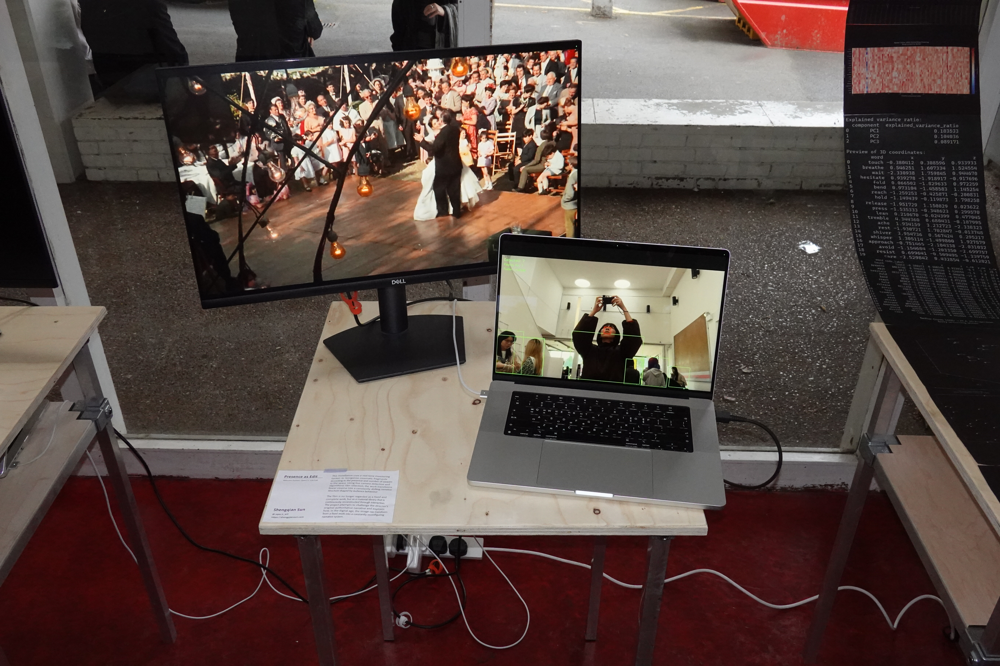
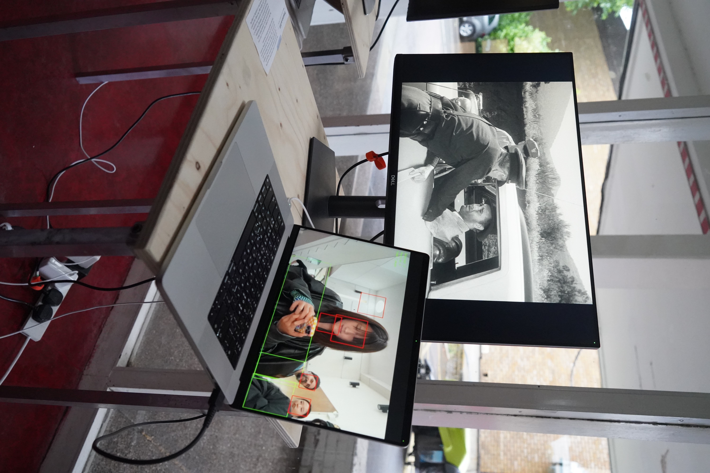
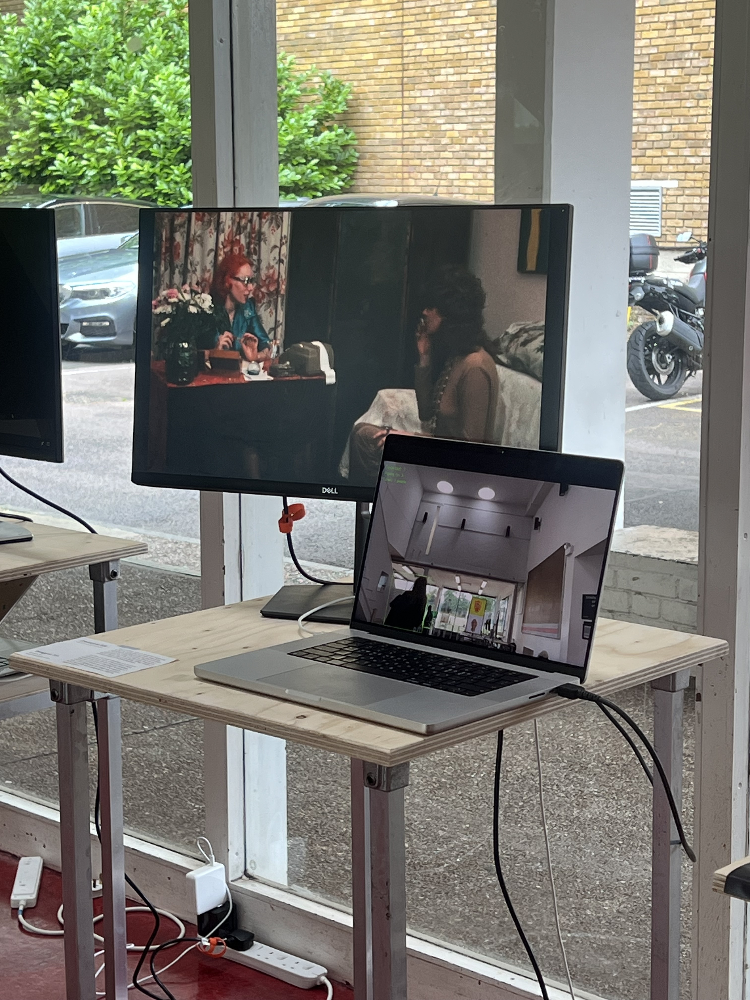

Presence as Edit
The project focuses on how the control of cinematic narratives changes in the context of digitization and surveillance, and how the position of the individual in the social structure is "digitized" and restructured. Whereas traditional cinema is author-driven, in this work the narrative is no longer fixed, but changes in real time according to the presence and number of viewers. I deconstruct the traditional linear film into a library of clips and trigger clips in real time for the appropriate number of people based on the number of viewers present, thus allowing the narrative to be constantly reorganized and regenerated as viewers move in and out. The image is no longer a closed, completed work, but a constantly reorganizing system; the presence and behavior of the audience unconsciously shapes the content and structure of the work.
Shengqian Sun
Shengqian Sun (b. 1999) is a computational artist with a background in visual communication design. She is currently based in London and studying at Goldsmiths, University of London. Her interdisciplinary practice spans installation, design, and new media, exploring the entanglement of technology, nature, and human perception. She is particularly interested in how invisible systems, data flows, algorithmic structures, and sensory signals quietly shape the way we understand and inhabit the world. Through sound, light, movement, and code, she translates abstract mechanisms into tangible experiences, creating poetic bridges between the digital and the organic. For Sun, art-making is an act of rebuilding the connection between the body and the machine, between perception and system, between technological precision and emotional sensitivity.